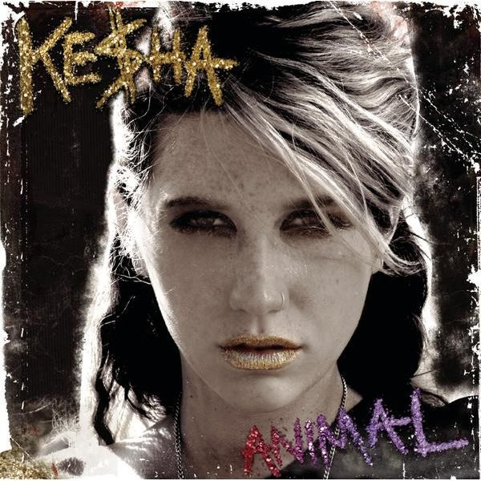

Ke$ha
2010 Billboard End-Of-Years차트에 1위로 마감한 가수이다 2010년에는 Animal앨범이 있다

Lady Gaga
2010 Billboard End-Of-Years차트에서는 8위에 그쳤으나 2008,2009에 몰고온 어마어마한 폭풍의 여파가 아직 남아있다. 2010년에는 앨범이 없고 2009년 말에 발매한 The Fame Monster가 있다.

Taio Cruz
2010 Billboard End-Of-Years에 9,10등을 나란히 올렸다. 중독성있는 멜로디가 특기로 추후에 런던 올림픽 폐막식 무대까지 오르게된다. 2010년에는 앨범이 없고 2009년에 발매한 Rokstarr가 있다.